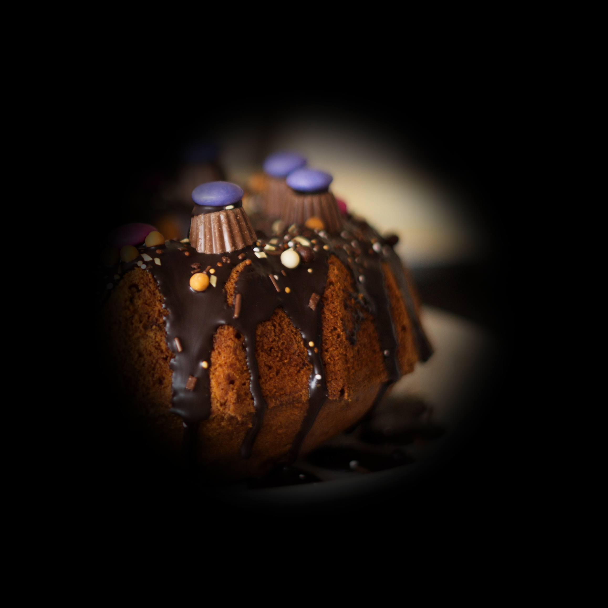

<!DOCTYPE html>
<html>

<head>
    <title>Add your experiment name</title>
    <script src="jspsych/dist/jspsych.js"></script>
    <script src="jspsych/dist/plugin-html-button-response.js"></script>
    <script src="jspsych/dist/plugin-html-slider-response.js"></script>
    <script src="jspsych/dist/plugin-image-button-response.js"></script>
    <script src="jspsych/dist/plugin-survey-likert.js"></script>
    <script src="jspsych/dist/plugin-survey-multi-choice.js"></script>
    <script src="jspsych/dist/plugin-survey-multi-choice-horizontal.js"></script>
    <script src="jspsych/dist/plugin-survey-multi-select.js"></script>
    <script src="jspsych/dist/plugin-image-slider-response.js"></script>
    <script src="jspsych/dist/plugin-html-keyboard-response.js"></script>
    <script src="jspsych/dist/plugin-image-keyboard-response.js"></script>
    <script src="jspsych/dist/plugin-instructions.js"></script>
    <script src="jspsych/dist/plugin-preload.js"></script>
    <script src="jspsych/dist/plugin-animation.js"></script>
    <script src="jspsych/dist/plugin-visual-spotlight.js"></script>
    <script src="jspsych/dist/plugin-visual-spotlight-title.js"></script>
    <script type="text/javascript" src="lib/vendors/jquery-2.2.0.min.js"></script>
    <script src="jspsych/dist/jspsych-7-pavlovia-2021.12.js"></script>
    <link href="css/jspsych_style.css" rel="stylesheet" type="text/css"></>
</head>

<body>
    <script>
        // This script loads the correct homepage. When you want a link to the homepage, use an anchor element and add id="homepage".
        window.onload = (function () {
            var strLink = "https://citylab.ruhosting.nl/" + localStorage.loc + "_Homepage_" + localStorage.lang + ".html";
            document.getElementById("homepage").setAttribute("href", strLink);
        });
    </script>
    
    <script src="nsd_images.js"></script>

    <header>
        <div class="home"><a id="homepage"></a></div>
    </header>
    <main>
        <div id="jspsych-target"></div>
    </main>
</body>

<script>
    // JsPsych template for Donders Citylab micro-experiments written by Y.S. Kuiper, adapted by the Predictive Brain Lab

    /* initialize jsPsych - do not change */
    var jsPsych = initJsPsych({
        display_element: 'jspsych-target'
    });

    // Change depending on whether you are debugging or running the experiment in pavlovia
    var pav = true; // PAVLOVIA FALSE (run offline) or PAVLOVIA TRUE (run online)
    var debug = true;

    if (debug) {
        localStorage.lang = 'EN'
        localStorage.loc = 'Blank'
    };

    /* create timeline */
    var timeline = [];

    /* optional - record participant ID/date/timestart */
    var subject_id = jsPsych.randomization.randomID(15); // random participant ID with 15 characters
    var TODAY = new Date();
    var DD = String(TODAY.getDate()).padStart(2, '0');
    var MM = String(TODAY.getMonth() + 1).padStart(2, '0');
    var YYYY = TODAY.getFullYear();
    const DATE = DD + "_" + MM + "_" + YYYY;
    var timestart = String(TODAY.getTime()).padStart(2, '0');

    jsPsych.data.addProperties({
        subject: subject_id,
        starttime: timestart,
        date: DATE
    });

    /* set homepage variable */
    var homepageURL = "https://citylab.ruhosting.nl/" + localStorage.loc + "_Homepage_" + localStorage.lang + ".html";

    /* prepare Pavlovia server */
    var pavloviaInfo;

    if (pav) { /// only if pav is true
        // init connection with pavlovia.org
        var pavlovia_init = {
            type: jsPsychPavlovia,
            command: "init",
            // Store info received by Pavlovia init into the global variable `pavloviaInfo`
            setPavloviaInfo: function (info) {
                console.log(info);
                pavloviaInfo = info;
            }
        };
        timeline.push(pavlovia_init);
    }

    /* randomly select n NSD images */
    function getRandomElements(arr, n) {
        let shuffled = arr.slice();
        for (let i = shuffled.length - 1; i > 0; i--) {
            const j = Math.floor(Math.random() * (i + 1));
            [shuffled[i], shuffled[j]] = [shuffled[j], shuffled[i]];
        }
        return shuffled.slice(0, n).map(img => `img/Natural_Scenes_Dataset_100subset/${img}`);
    }

    const spotlightImages = getRandomElements(nsdImages, 3);

    /* preload images */
    var preload = {
        type: jsPsychPreload,
        images: [
            'img/Glaucoma_example.png',
            'img/CityLab_Design_small.gif',
            'img/PBL_QR.png',
            ...spotlightImages
        ]
    };

    timeline.push(preload);

    /* pre-experiment explanation */
    var instructions = {
        type: jsPsychInstructions,
        pages: function () {
            if (localStorage.lang == "EN") {
                return [
                    // Introduction
                    '<div class="jspsych-instructions-header"><h1>Welcome!</h1></div>' 
                    +
                    '<div class="jspsych-instructions-body-top"><p><br><br><b>Have you ever wondered what it is like to<br>live with a visual impairment?</b></p></div>' 
                    +
                    '<div class="jspsych-instructions-body-column-left"><p>In this experiment, you will see the world through a narrow tunnel, similar to people with <i>glaucoma</i></span>.</p></div>' 
                    +
                    '<div class="jspsych-instructions-body-column-right"><br><br></img></div>',

                    // Part 1
                    '<div class="jspsych-instructions-header"><h1>What will I be doing?</h1></div>' 
                    +
                    '<div class="jspsych-instructions-body-top"><p><br><br><b>Part 1:</b><br>You will explore an image as if you have tunnel vision.</p></div>' 
                    +
                    '<div class="jspsych-instructions-body-column-left"><p><span style="color: grey;"> Click on the black screen to reveal part of the underlying image.</span> After a short delay, you can click again. Uncover as many areas as you like. When you&#39;ve seen enough, move to the next image.</p></div>' 
                    +
                    '<div class="jspsych-instructions-body-column-right"><br><br></img></div>',

                    // Part 2
                    // '<div class="jspsych-instructions-body"><p><b>Part 2:</b><br>After exploring three images, we will ask you a<br>few <span style="color: grey;">questions</span> about your experience.<br><br><b>Part 3:</b><br>Finally, we will provide <span style="color: grey;">feedback</span> on how your<br>navigation compares to other visitors.<br><br>The experiment will take no longer than <span style="color: grey;">5 minutes</span>!</p></div>'
                    '<div class="jspsych-instructions-body"><p><br><b>Part 2:</b><br>After exploring three images, we will ask you a<br>few <span style="color: grey;">questions</span> about your experience.<br><br>The experiment will take no longer than <span style="color: grey;">5 minutes</span>!</p></div>'
                ];
            } else if (localStorage.lang == "NL") {
                return [
                    // Introduction
                    '<div class="jspsych-instructions-header"><h1>Welkom!</h1></div>' 
                    +
                    '<div class="jspsych-instructions-body-top"><p><br><br><b>Heb je je ooit afgevraagd hoe het moet zijn om te<br>leven met een visuele beperking?</b></p></div>' 
                    +
                    '<div class="jspsych-instructions-body-column-left"><p>Je zult de wereld zien door een nauwe tunnel, net als dat bij mensen met <i>glaucoom</i></span> het geval is.</p></div>' 
                    +
                    '<div class="jspsych-instructions-body-column-right"><br><br></img></div>',

                    // Part 1
                    '<div class="jspsych-instructions-header"><h1>Wat ga je doen?</h1></div>' 
                    +
                    '<div class="jspsych-instructions-body-top"><p><br><br><b>Deel 1:</b><br>You will explore an image hidden underneath a black screen.</p></div>' 
                    +
                    '<div class="jspsych-instructions-body-column-left"><p>Like someone with tunnel vision, you can only reveal one area at a time.<span style="color: grey;"> Click to reveal an area, then wait a second before the next reveal.</span> Uncover as many areas as you like. When you&#39;ve seen enough, move to the next image.</p></div>' 
                    +
                    '<div class="jspsych-instructions-body-column-right"><br><br></img></div>',

                    // Part 2
                    '<div class="jspsych-instructions-body"><p><br><b>Deel 2:</b><br>Na drie plaatjes te hebben bekeken, hebben we een<br>paar <span style="color: grey;">vragen</span> over je ervaring.<br><br>Bij elkaar duurt het niet langer dan <span style="color: grey;">5 minuten</span>!</p></div>'
                ];
            }
        },
        button_label_next: function () {
            if (localStorage.lang == "EN") {
                return "Continue";
            } else if (localStorage.lang == "NL") {
                return "Verder"
            }
        }, // do not change
        button_label_previous: function () {
            if (localStorage.lang == "EN") {
                return "Previous";
            } else if (localStorage.lang == "NL") {
                return "Vorige"
            }
        }, // do not change
        show_clickable_nav: true // do not change
    }

    timeline.push(instructions);

    /* consent - do not change */
    var consent = {
        type: jsPsychHtmlButtonResponse,
        stimulus: function () {
            if (localStorage.lang == "EN") {
                return '<p>You are about to participate in a research study.<br><br>By continuing, you agree that your anonymous response will be recorded, used for research purposes and stored for 10 years by the researchers.</p>';
            } else if (localStorage.lang == "NL") {
                return '<p>Je gaat zo deelnemen aan een onderzoek.<br><br>Als je verder gaat dan geef je toestemming dat jouw anonieme respons wordt vastgelegd, gebruikt voor onderzoeksdoeleinde en opgeslagen voor 10 jaar door de onderzoekers.</p>';
            }
        },
        choices: function () {
            if (localStorage.lang == "EN") {
                return ['Yes, I give consent', '<a id="homepage">No, back to homepage</a>']
            } else if (localStorage.lang == "NL") {
                return ['Ja, ik geef toestemming', '<a id="homepage">Nee, terug naar begin pagina</a>']
            }
        }
    };
    // href not working!!

    timeline.push(consent);

    /* check whether someone has previously performed the experiment - do not change */
    var repeat = {
        type: jsPsychHtmlButtonResponse,
        stimulus: function () {
            if (localStorage.lang == "EN") {
                return '<h3>Have you previously done this experiment?</h3>';
            } else if (localStorage.lang == "NL") {
                return '<h3>Heb jij dit experiment al eerder gedaan?</h3>';
            }
        },
        choices: function () {
            if (localStorage.lang == "EN") {
                return ['No', 'Yes, I would like to do it again']
            } else if (localStorage.lang == "NL") {
                return ['Nee', 'Ja, ik wil het nog een keer doen']
            }
        }
    };

    timeline.push(repeat);

    /* age - do not change */
    var age = {
        type: jsPsychHtmlSliderResponse,
        stimulus: function () {
            if (localStorage.lang == "EN") {
                return '<h3>What is your age?</h3>'
            } else if (localStorage.lang == "NL") {
                return '<h3>Wat is jouw leeftijd?</h3>'
            }
        },
        slider_start: '--',
        require_movement: true,
        show_value: true,
        labels: ['<p class=slider-anchor-left>0</p>', '<p class=slider-anchor-right>100</p>'],
    };

    timeline.push(age);

    /* gender identity */
    var gender = {
        type: jsPsychSurveyMultiChoice,
        questions: [
            {
                prompt: function () {
                    if (localStorage.lang == "EN") {
                        return '<h3>What do you identify most with?</h3>'
                    } else if (localStorage.lang == "NL") {
                        return '<h3>Waar identificeer jij je het meest mee?</h3>'
                    }
                },
                name: 'GenderIdentity',
                options: function () {
                    if (localStorage.lang == "EN") {
                        return ['Female', 'Male', 'Non-binary', 'Prefer not to say']
                    } else if (localStorage.lang == "NL") {
                        return ['Vrouw', 'Man', 'Non-binair', 'Zeg ik liever niet']
                    }
                },
                required: true,
            }],
    };

    timeline.push(gender);

    /* visual searchlight */
    function createSpotlightTrial(imageUrl, index) {
        return {
            type: jsPsychVisualSpotlightT,
            stimulus: imageUrl,
            stimulus_title: function() {
                if (localStorage.lang == "EN") {
                    return `<h3"><b>Image ${index + 1} of 3</b><br>Click to explore the hidden image.</h3>`;
                } else if (localStorage.lang == "NL") {
                    return `<h3">Plaatje ${index + 1} van 3</b><br>Klik om het verborgen plaatje te verkennen.</h3>`;
                }
            },
            choices: function() {
                if (localStorage.lang == "EN") {
                    return ['Continue']
                } else if (localStorage.lang == "NL") {
                    return ['Verder']
                }
            },
            trial_duration: 60000,
            spotlight_radius: '60px',
            spotlight_transparency: '80%',
            click_delay: 1000
        };
    }

    spotlightImages.forEach((image, index) => {
        timeline.push(
            createSpotlightTrial(image, index)
        );
    });

    /* image liking */
    function createLikingTrial(imageName) {
        return {
            type: jsPsychHtmlSliderResponse,
            stimulus: function () {
                if (localStorage.lang == "EN") {
                    return [
                        '<h3>How much do you like this image?<br><br></h3>'
                        +
                        ``
                    ]
                } else if (localStorage.lang == "NL") {
                    return [
                        '<h3>Hoe leuk vind je dit plaatje?<br><br></h3>'
                        +
                        ``
                    ]
                }
            },
            slider_start: '--',
            require_movement: true,
            show_value: false,
            min: 0,
            max: 10,
            labels: function () {
                if (localStorage.lang == "EN") {
                    return ['<p class=slider-anchor-left>Not at all</p>', '<p class=slider-anchor-right>Very much</p>']
                } else if (localStorage.lang == "NL") {
                    return ['<p class=slider-anchor-left>Helemaal niet</p>', '<p class=slider-anchor-right>Heel erg</p>']
                }
            },
            on_load: function() {
                document.querySelector('#jspsych-html-slider-response-next').style.marginTop = '40vh'; // '570px' or '50vh'
            }
        };
    }
    const shuffledImages = jsPsych.randomization.shuffle(spotlightImages);

    shuffledImages.forEach(image => {
        timeline.push(
            createLikingTrial(image)
        );
    });

    /* personality questionnaire */
    function createQuestionTrial(promptTextEN, promptTextNL, questionName) {
        return {
            type: jsPsychSurveyMultiChoiceH,
            questions: [{
                prompt: function () {
                    if (localStorage.lang == "EN") {
                        return `<h3>How characteristic is this statement of you?</h3><br><c>${promptTextEN}<br><br></c>`;
                    } else if (localStorage.lang == "NL") {
                        return `<h3>Hoe toepasbaar is deze uitspraak op jou?</h3><br><c>${promptTextNL}<br><br></c>`;
                    }
                },
                name: questionName,
                options: function () {
                    if (localStorage.lang == "EN") {
                        return ['Not at all', ' ', ' ', ' ', 'Entirely'];
                    } else if (localStorage.lang == "NL") {
                        return ['Sterk mee oneens', ' ', ' ', ' ', 'Sterk mee eens'];
                    }
                },
                required: true,
                horizontal: true
            }]
        };
    }

    const questions = [
        {en: "Uncertainty stops me from having a strong opinion.", nl: "Onzekerheid belet mij om een uitgesproken mening te hebben.", name: 'Q1'},
        {en: "Uncertainty makes me uneasy, anxious, or stressed.", nl: "Door onzekerheid voel ik me ongemakkelijk, angstig, of gespannen.", name: 'Q6'},
        {en: "It frustrates me not having all the information I need.", nl: "Ik vind het frustrerend om niet over alle benodigde informatie te beschikken.", name: 'Q8'},
        {en: "When I am uncertain, I can't function very well.", nl: "Als ik onzeker ben, kan ik niet goed functioneren.", name: 'Q15'}
    ];

    const shuffledQuestions = jsPsych.randomization.shuffle(questions);
    shuffledQuestions.forEach(question => {
        timeline.push(
            createQuestionTrial(question.en, question.nl, question.name)
        );
    });

    /* save data to pavlovia (have this one before the outro) */
    if (pav) {
        var pavlovia_finish = {
            type: jsPsychPavlovia,
            command: "finish",
            subject: subject_id,
            // Thomas Pronk; your filter function here
            dataFilter: function (data) {
                return data;
            },
            // Thomas Pronk; call this function when we're done with the experiment and data reception has been confirmed by Pavlovia
            completedCallback: function () {
                alert('data successfully submitted!');
            }
        };

        timeline.push(pavlovia_finish);
    }

    /* explanation after experiment */
    var explanation = {
        type: jsPsychInstructions,
        pages: function () {
            if (localStorage.lang == "EN") {
                return [
                    '<div class="jspsych-instructions-header"> <h1>What do you think?</h1></div>'
                    +
                    '<div class="jspsych-instructions-body"> <p><br>Are people more curious about images that they do not understand immediately? Or images that they like more?<br><br>This is one of the things we want to find out.<br><br>Thank you for your contribution!</p></div>'
                ]
            } else if (localStorage.lang == "NL") {
                return [
                    '<div class="jspsych-instructions-header"> <h1>Wat denk jij?</h1></div>'
                    +
                    '<div class="jspsych-instructions-body"> <p><br>Zijn mensen nieuwsgierig naar plaatjes die niet duidelijk zijn en waarover ze meer willen weten? Of naar plaatjes die ze leuker/mooier lijken?<br><br>Dit is een van de dingen waar wij benieuwd naar zijn.<br><br>Bedankt voor je bijdrage!</p></div>'
                ]
            }
        },
        button_label_next: function () {
            if (localStorage.lang == "EN") {
                return "Continue"
            } else if (localStorage.lang == "NL") {
                return "Verder"
            }
        },
        show_clickable_nav: true
    }

    timeline.push(explanation);

    /* end */
    var end = {
        type: jsPsychImageButtonResponse,
        stimulus: 'img/PBL_QR.png', // add QR code to citylab page
        choices: function () {
            if (localStorage.lang == "EN") {
                return ['<a id="homepage">Back to homepage</a>']
            } else if (localStorage.lang == "NL") {
                return ['<a id="homepage">Terug naar start</a>']
            }
        },
        prompt: function () {
            if (localStorage.lang == "EN") {
                return '<p class="jspsych-image-button-response-prompt">Would you like to learn more? Scan the QR-code!</p>'
            } else if (localStorage.lang == "NL") {
                return '<p class="jspsych-image-button-response-prompt">Wil je meer leren? Scan de QR-code!</p>'
            }
        }
    };

    timeline.push(end);

    /* run the experiment */
    jsPsych.run(timeline);

</script>


</html>